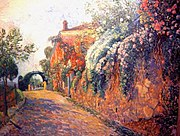
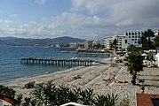

Juan-les-Pins jest miastem uzdrowiskowym w południowo-wschodzniej części Francji.
Juan-les-Pins znajduje się między Niceą a Cannes; nad Morzem Śródziemnym. Miasto dzieli około 13 kilometrów do portu lotniczego Corte d’Azur. Położone jest na zachód od miasta Antibes, na zachodnim zboczu pasma górskiego.
12 marca 1882 roku wieś została nazwana Juan-les-Pins. W 1883, zdecydowano się na budowę dworca kolejowego w Juan-les-Pins, w linii Paryż-Lyon-Morze Śródziemne (PLM), która przechodziła już przez miasto w 1863 roku.
ŹródłoZe względu na swoje atrakcyjne położenie przy Morzu Śródziemnym, w miejscowości jest wiele atrakcji dla turystów. Oto niektóre z nich: